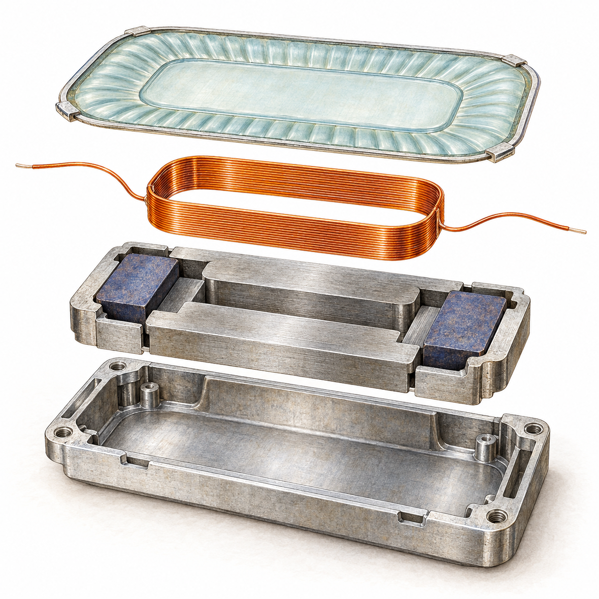

How to make · Part
The little loop
that moves the film.
Copper voice coil · light wire, organized into a moving part.

A coil is insulated wire arranged into a repeatable shape. In the speaker’s magnetic field, current in that wire produces the force that drives the moving assembly.
Its shape comes from a tool. The tool guides the wire, but stays outside the finished speaker.
Try this path ↗ Winding fixtureWinding fixture → used to make the voice coil.
This is a stand-in page. These illustrated making stages expose the parts and tools; design-specific material requirements and process settings remain in progress.
Sample step 1
Wind around a reference shape.
Guide Partinsulated wire ↗ around a Tool winding fixture Try this path ↗. The reference shape helps make a coil that can fit the intended magnetic gap.
The copper carries current. Its coating separates neighboring turns electrically.
The tool leaves. The part continues into assembly.
Sample step 2
Keep the turns together.
The shaped coil must remain coherent as it leaves the winding reference and joins the diaphragm. Prepare the intended bond with Partadhesive ↗, with handling and supports that preserve the coil shape. The reference tool leaves the work.
The next parent step bonds this coil to the membrane.
↑ See it join the diaphragmSample step 3
Leave a path for current.
Prepare Partterminals + flexible leads ↗ to connect the coil. In the parent assembly, those connections must also allow the moving system to travel.
The ToolMeter ↗ checks continuity and DC resistance. Motion and acoustic response are checked in the assembled speaker.
↑ See Speaker’s connection checksReturn with the part in mind.
The speaker’s story continues where you opened this article.